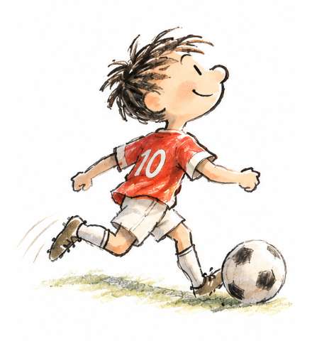
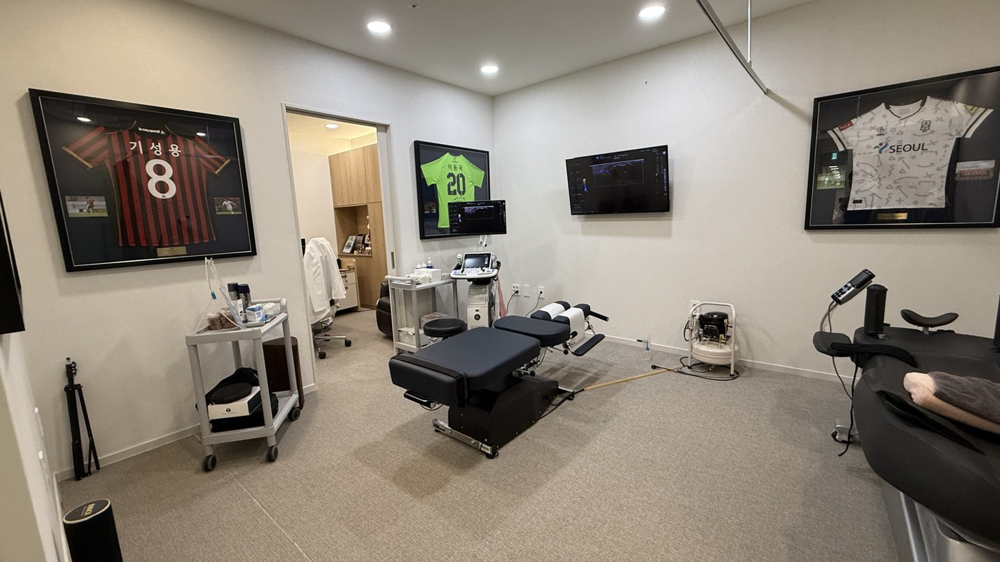
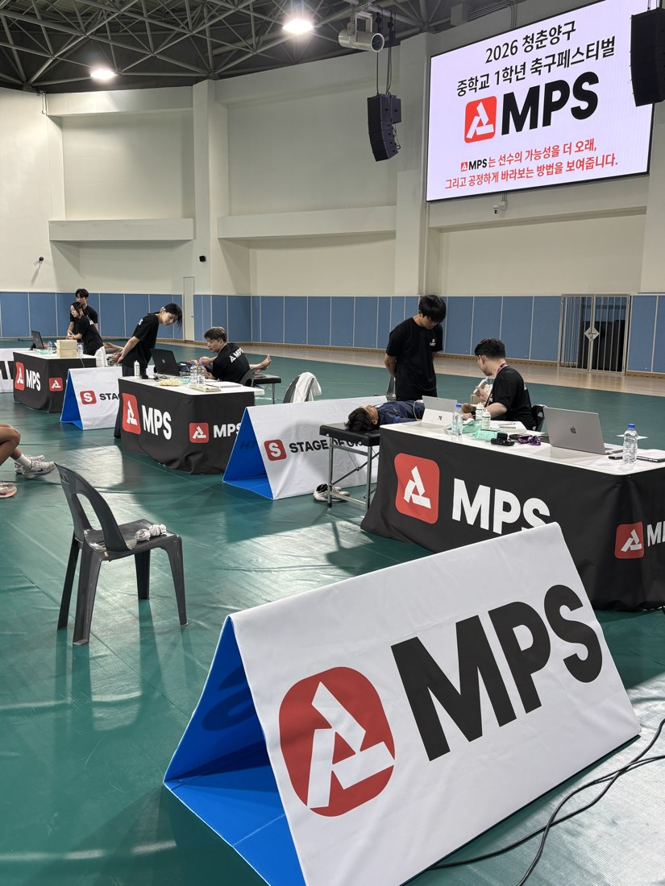
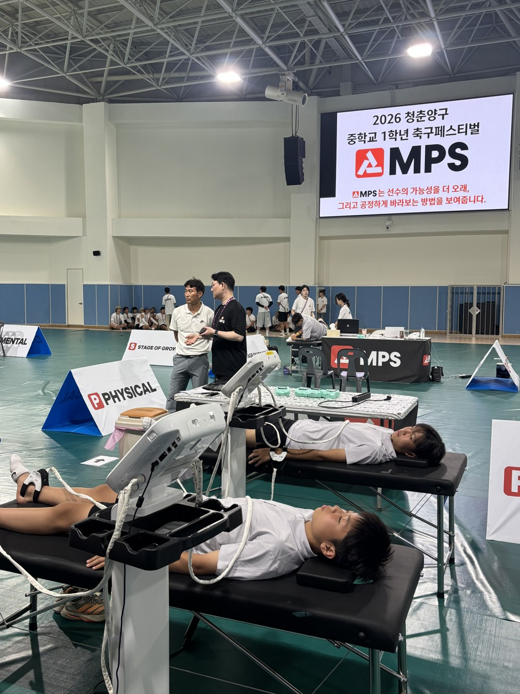
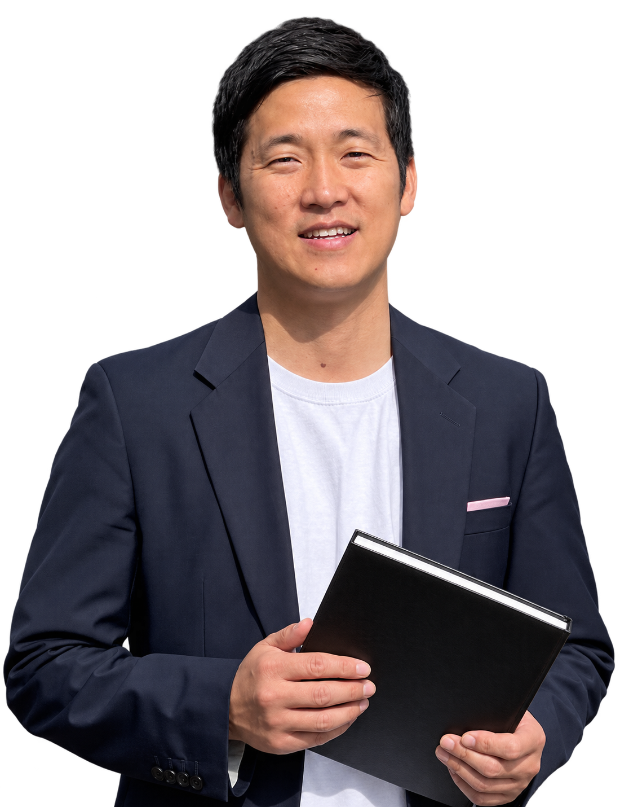
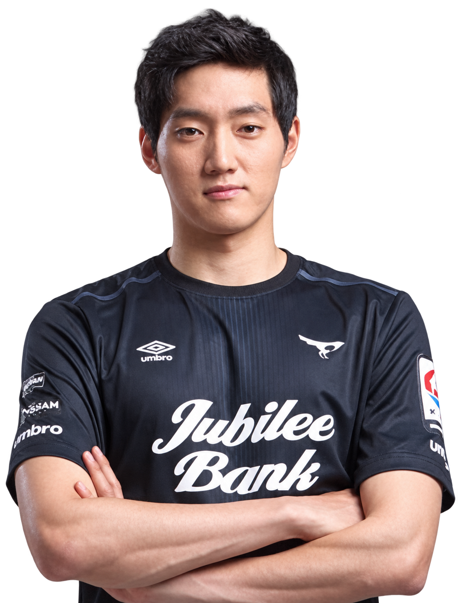

ENGLAND
프리미어리그 아카데미
성숙도를 고려한 경기 편성
연령별 경기
＋성숙도별 경기
체격의 영향이 적은 환경에서
보여줄 기회를 만듭니다.
뼈나이로 성장단계를 살피고,
아이에게 맞는 목표를 찾습니다.
멘탈 · 피지컬 · 성장, 함께 보는 MPS
뼈나이로 성장단계를 살펴봅니다.
바이오밴딩으로 성장단계를 살피고,
선수마다 맞는 기회를 만듭니다.
성숙도를 고려한 경기 편성
체격의 영향이 적은 환경에서
보여줄 기회를 만듭니다.
늦게 성숙하는 선수에게도 기회를
성장이 빠른 선수는 더 강한 경쟁으로,
축구지능을 높일 기회를.
우리 아이를 보는 기준도,
성장 속도에서 시작합니다.

뼈나이 · 성장속도
긴장 · 자신감 · 회복
힘 · 균형 · 회복
성장단계로 마음과 몸을 읽습니다.
성숙도가 비슷한 선수를 함께 보는 바이오밴딩의 관점을 평가에 적용합니다. 성장판 정밀초음파검사와 뼈나이, 키 변화로 성장단계를 살핀 뒤 피지컬·멘탈 측정 결과를 연결해 해석합니다. 하나의 수치만으로 훈련 적합성이나 부상 가능성을 단정하지 않습니다.
스포츠MPS의 핵심은 바이오밴딩 2.0.
성장단계를 평가·해석·훈련 목표로 연결합니다.
같은 근력·균형·회복 수치라도 급성장 전·중·후의 맥락에 맞춰 읽습니다. 성장단계, 검사 근거, 훈련량과 이전 기록을 함께 검토합니다.
성장판 정밀초음파검사 후 급성장 전·중·후를 살펴
지금 필요한 운동과 관리 방향을 설명합니다.
기본 움직임과 운동능력, 멘탈성향을 확인해 앞으로 비교할 기준을 세웁니다.
성장속도와 함께 움직임·회복·훈련 부담의 변화를 살피고, 보완할 점을 찾습니다.
성숙도와 현재 운동능력, 누적 기록을 연결해 강화할 능력과 관리 방향을 정합니다.
어떤 능력을 왜 보완해야 하는지, 성장단계와 실제 측정 결과를 바탕으로 설명합니다.
성장단계는 해석의 기준입니다. 같은 단계라도 종목·훈련 경험·현재 운동능력·통증·회복 상태가 다르므로, 선수별 검사 결과를 바탕으로 훈련의 우선순위를 정합니다. 모든 아이에게 같은 훈련을 일괄 적용하지 않습니다.
네. 현재 키와 뼈나이, 반복 측정한 성장속도로 성장의 위치를 확인하고 예측 키 범위를 살핍니다. PHV는 키가 가장 빠르게 자라는 시기를 뜻합니다. 예측 키는 확정된 결과가 아닌 참고 범위이며 이후 측정으로 변화를 확인합니다.
약한 멘탈은 없습니다.
다만, 더 단단해질 부분을 제대로 찾고 강화해가면 그만입니다.
성장기 엘리트선수, 성장단계별 각각의 데이터
풍부한 엘리트 선수 측정 데이터를 기반으로 현재 위치에서 성장단계, 멘탈성향, 이전 기록을 함께 비교해가며 아이 맞춤식으로 강화해갑니다.
프로출신 멘토와 함께.
5대 멘탈 지표 · 6점 만점 · 설명용 예시
경기긴장도는 높을수록 긴장을 잘 다루는 힘을 뜻합니다.
도움을 잘 구하는 강점을 살리고,
실수 뒤 다시 시작하는 연습을 함께해요.
“실수보다 그다음 플레이가 중요해.
다시 시작하는 건 같이 연습해 보자.”점수를 아이에게 건넬 말로 바꿉니다.
경기 긴장, 도움 활용, 준비, 회복, 자기 통제의 강점과 연습 방향을 확인합니다. MPS 보유 표준 데이터와 아이 자신의 이전 기록을 참고하고, 성장단계와 경기·훈련 환경을 함께 해석합니다. 검사 회차에 따라 구성은 달라질 수 있습니다.
성장단계에 맞춰 운동능력과 회복 상태,
부상위험 관련 지표를 함께 해석합니다.
실제 검사 구성은 회차·센터에 따라 확인해 주세요.
한 수치만으로 판단하지 않습니다. 같은 수치라도 급성장 전·중·후에 따라 의미를 다르게 해석합니다. 성장단계, 좌우 차이, 이전 검사와의 변화, 수면·훈련량·통증을 함께 살펴봅니다. 필요한 경우 의료진의 평가로 연결합니다.
센터의 검사 공간에서,
선수들이 뛰는 대회 현장까지.

개별 평가와 상담, 이후의 변화 확인까지 연결합니다.


측정으로 끝나지 않도록.
결과를 설명하고, 다음 관리를 함께 정합니다.
성장단계에 맞춘 목표와 변화
IDP, 선수별 성장플랜
MPS 결과와 현장 관찰을 함께 보고,
지도자·선수가 목표를 정합니다.
아카데미 선수마다, 개인의 필요에 맞춘 성장플랜.
Premier League · 사례 보기 ↗같은 팀 훈련 안에서도, 선수마다 다른 목표.
FIFA Training Centre · 사례 보기 ↗스포츠과학 × 스포츠한의학.
대표팀, 프로, 프로산하 선수로의 성장 경험을 MPS에 담았습니다.
주니어골든에이지 대표
해온한의원 본원 대표 한의사

축구선수의 학부모이자 팀닥터로,
아이의 현장과 부모님의 고민을 함께 이해합니다.

축구행정·스포츠마케팅 20년
대한축구협회·대한체육회 스포츠개혁위원

성남FC 축구선수 출신
현장 운영 및 고객 경험 담당
양우영COO · 운영 / 상담중등정교사 출신 총괄 매니저
교육·상담 총괄 · 평가 현장 운영
정지은성장 / 멘탈 R&D소아과 교수 · 심리상담사 · 한의학박사·전문의
성장·멘탈 평가 프로토콜 연구개발
한유경 · 민은경피지컬 R&DRMSK 초음파 · 한방내과 전문의·팀닥터
피지컬 부상위험도 프로토콜 연구개발 협업
이준우CTOAI 웹솔루션 개발 총괄
박세환UX/UI웹·모바일 UX/UI 기획 5년
측정 앱·리포트 설계
궁금한 점부터 편하게 이야기해 주세요.
아이에게 맞는 시작을 함께 찾겠습니다.
방문 전 상담으로 검사 가능 항목과 일정을 확인해 주세요.
MEASURE TODAY.
GROW TOMORROW.